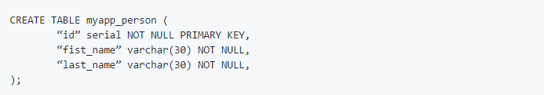
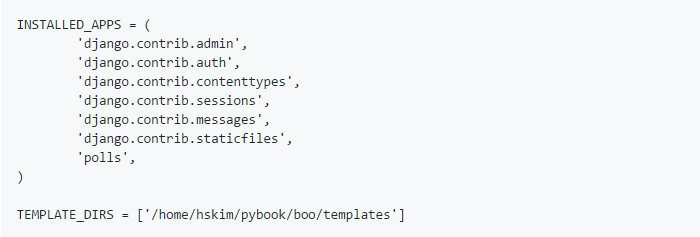
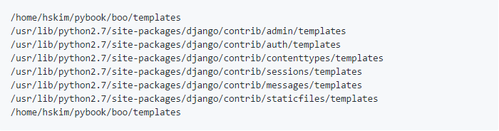
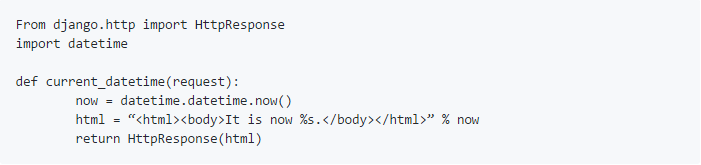

Django application
발전을 위한 기초이해
Tutorial 2. Django application
Django에서의 application 방식
• 웹 사이트를 설계할 때 가장 먼저 해야 할 일은 프로그램이 해야 할 일을 적당한 크기로 나누어서 모듈화하는 것입니다. 이 경우, 웹사이트의 전체 프로그램 또는 모듈화된 단위 프로그램을 application이라고 합니다. 즉, 프로그램으로 코딩할 대상을 application이라고 부르는 것입니다. 그러나 Django에서는 용어를 사용할 때, application의 개념을 웹 서버 개발 측면에서 좀 더 구체화하고 있습니다. 웹 사이트에 대한 전체 프로그램을 프로젝트라 하고, 모듈화된 단위 프로그램을 application이라 부르고 있습니다. 즉, application 프로그램들이 모여서 프로젝트를 개발하는 개념입니다. Django에서는 기본적으로 MTV 모델에 따라 application을 개발하도록 유도해줍니다.
MTV패턴
• Django Framework에서는 View를 Template, Controller는 View라고 표현하며, MVC를 MTV 패턴이라고 합니다. Model은 데이터베이스에 저장되는 데이터를 의미하는 것이고, Template은 사용자에게 보여지는 부분을, View는 실질적으로 프로그램 로직이 동작하여 데이터를 가져오고 적절하게 처리한 결과를 Template에 전달하는 역할을 수행합니다. 예를 들면, Model은 블로그의 내용을 데이터베이스로부터 가지고 오거나 저장, 수정하는 기능을, Template은 출력을 위해 디자인과 테마를 적용해서 보여지는 페이지를 만들어주는 과정을, View는 버튼을 눌렀을 때 어떤 함수를 호출하며 데이터를 어떻게 가공할 것인지 결정하는 역할을 담당합니다.
웹 클라이언트의 요청을 받고, Django에서 MTV Model에 따라 처리하는 과정을 요약하면 다음과 같습니다.
1. 클라이언트로부터 요청을 받으면 URLconf 모듈을 이용하여 URL을 분석합니다.
2. URL 분석 결과를 통해 해당 URL에 대한 처리를 담당할 View를 결정합니다.
3. View는 자신의 로직을 실행하면서, 만일 데이터베이스 처리가 필요하면 Model을 통해 처리하고 그 결과를 반환받습니다.
4. View는 자신의 로직 처리가 끝나면 Template을 사용하여 클라이언트에 전송할 HTML 파일을 생성합니다.
5. View는 최종 결과로 HTML 파일을 클라이언트에게 보내 응답합니다.
▸ Model - 데이터베이스 설계
• Model이란 사용될 데이터에 대한 정의를 담고 있는 Django의 클래스입니다. Django는 ORM 기법을 사용하여 application에서 사용할 데이터베이스를 클래스로 매핑해서 코딩할 수 있습니다. 즉, 하나의 Model 클래스는 하나의 테이블에 매핑되고, Model 클래스의 속성은 테이블의 컬럼에 매핑됩니다. application에서는 데이터베이스에 대한 액세스를 SQL 없어도 클래스를 다루는 것처럼 할 수 있어서 편리합니다. 또한 SQLite3, MySQL, PostgreSQL 등 데이터베이스 엔진을 변경하더라도 ORM을 통한 API는 변경할 필요가 없기 때문에 필요에 따라 데이터베이스 엔진을 훨씬 쉽게 변경할 수 있습니다. Django의 ORM 기법에 대한 이해를 돕기 위하여 Person이라는 테이블, 즉 Django의 Person Model 클래스를 정의해보겠습니다. 이러한 Model 클래스는 models.py 파일에 정의합니다.
위 Person Model은 Django 내부적으로 SQL 명령을 사용하여 다음과 같은 데이터베이스 테이블을 생성합니다.
위의 예제는 Django의 테이블 및 컬럼의 수많은 규칙(https://docs.djangoproject.com/en/1.7/topics/db/models/) 중에 다음과 같은 규칙이 적용된 것입니다.
∗ 테이블명은 application명과 테이블 클래스명을 밑줄(_)로 연결하고, 모두 소문자로 표시합니다. 원한다면 다른 이름으로 직접 지정할 수도 있습니다.
∗ Primary Key는 Person 클래스에서 정의하지 않아도 Django에서 자동으로 부여합니다. 개발자가 직접 지정할 수도 있습니다.
Django는 테이블을 Model 클래스로 정의하고 이를 실제 데이터베이스에 반영한 후에도 테이블에 데이터를 입력하고 입력된 데이터를 확인 및 변경할 수 있는 여러가지 기능을 제공하고 있습니다.
▸ Template - 화면 UI 설계
• Django는 자체 Template 시스템을 갖고 있기 때문에 디자이너도 쉽게 이해할 수 있는 문법을 제공하고 있습니다. 화면의 디자인을 변경할 일이 생기면 디자이너는 프로그램 로직에 상관없이 문법에 맞게 Template만 수정하면 되므로, 디자이너와 개발자 간에 협업이 편리해졌습니다. 또한 Django에서 제공하는 Template은 파이썬 코드를 직접 사용할 수 있기 때문에 더욱 강력하고 확장하기 쉬운 구조로 되어 있습니다.
• Template 파일은 *.html 확장자를 가지며, 장고의 Template 시스템 문법에 맞게 작성합니다. 유의할 점은 Template 파일을 적절한 디렉토리에 위치시켜야 한다는 것입니다. 즉, Django에서 Template 파일을 찾는 방식을 이해하고 있어야 하며, Django는 그에 맞는 위치에 Template 파일이 위치해야 Template 파일을 찾을 수 있습니다.
• Django에서 Template 파일을 찾을 때는 TEMPLATE_DIRS 및 INSTALLED_APPS에서 지정된 디렉토리를 검색합니다. 이 항목들은 프로젝트 설정 파일인 settings.py 파일에 정의되어 있습니다. 여러 개의 디렉토리를 지정할 수 있는데, 지정된 순서대로 디렉토리를 검색하여 Template 파일을 찾습니다.
만약 settings.py 파일에 아래와 같이 정의되어 있다면,
다음과 같은 순서대로 템플릿 디렉토리를 검색하여 템플릿 파일을 찾습니다.
▸ View - 로직 설계
• 일반적으로 View는 웹 요청을 받아서 데이터베이스 접속 등 해당 application의 로직에 맞는 처리를 하고, 그 결과 데이터를 HTML로 변환하기 위하여 Template 처리를 한 후에, 최종 HTML로 된 응답 데이터를 웹클라이언트로 반환하는 역할을 합니다.
• Django에서의 View는 함수 또는 클래스의 메소드로 작성되며, 웹 요청을 받고 응답을 반환해줍니다. 여기서 응답은 HTML 데이터일 수도 있고, 리다이렉션 명령일 수도 있고, 404 에러 메시지일 수도 있습니다. 다양한 형태의 응답 데이터를 만들어 내기 위한 로직을 View에 작성하는 것입니다. 이러한 View는 보통 views.py 파일에 작성하지만, 원한다면 다른 파일에 작성해도 무방합니다. 다만 파이썬 경로에 있는 파일이어야 찾을 수가 있습니다.
간단한 예로 현재의 날짜와 시간을 HTML로 반환해주는 View를 작성해보겠습니다.
이 경우는 클래스가 아니라 함수로 View를 작성한 예시입니다. View 함수는 첫 번째 인자로 HttpRequest 객체를 받습니다. 그리고 필요한 처리를 한 후에 최종적으로 HttpResponse 객체를 반환합니다.
만일 에러를 반환하고 싶다면 아래처럼 HttpResponseNotFound와 같은 에러 응답 객체를 반환하면 됩니다. 에러 응답 클래스는 모두 HttpResponse 클래스의 하위 클래스로 정의되어 있습니다.